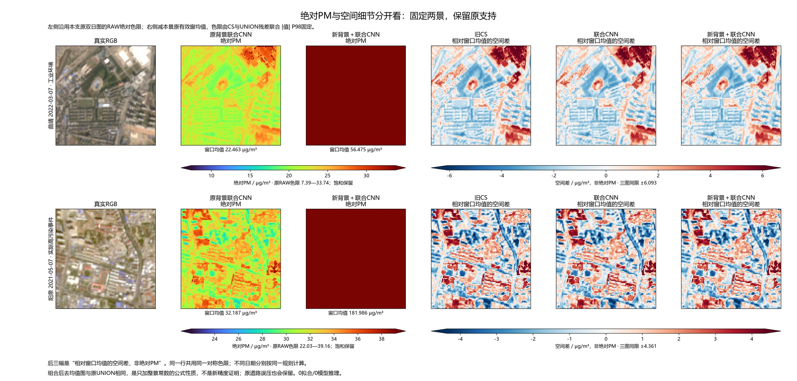

固定曲靖2022-03-07、阳泉2021-05-07两景。左侧绝对PM沿用原RAW色限，饱和仍显示；右侧三个图各自减去原有效窗均值，用同一对称色限呈现空间差。
右侧是相对窗口均值的空间差，非绝对PM。每景色限固定为CS与UNION残差合并后的绝对值P98，不按某一图调色；原valid不变。组合与UNION去均值后相同是公式性质，不能作为新精度证明。

| 固定场景 | 原UNION均值 | 组合均值 | 绝对下限 | 绝对上限 | 残差对称限 | UNION与组合残差最大差 |
|---|---|---|---|---|---|---|
| 曲靖 2022-03-07 · 工业环境 | 22.4629 | 56.4753 | 7.3938 | 33.7426 | 6.09312 | 7.10543e-15 |
| 阳泉 2021-05-07 · 实际高污染事件 | 32.1871 | 181.986 | 22.0286 | 39.1609 | 4.36143 | 2.13163e-14 |
单位µg/m³。空间细节保留也意味着原道路误压保留；背景变化不能修复材料误判。本页只读取既有缓存渲染，没有拟合或模型推理。